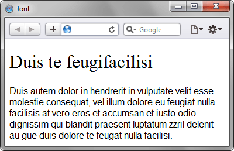

Универсальное свойство,
которое позволяет одновременно
задать несколько характеристик
шрифта и текста.
Синтаксис
font:
[font-style || font-variant || font-weight]
font-size [/line-height]
font-family | inherit
В качестве обязательных значений
свойства font
указывается размер шрифта
и его семейство.
Остальные значения являются
необязательными
и задаются при желании.
Значения
| Значение | Описание |
|---|---|
| inherit | Наследует значение родителя. |
| caption | Шрифт для текста элементов форм. |
| icon | Шрифт для текста под иконками. |
| menu | Шрифт, применяемый в меню. |
| message-box | Шрифт для диалоговых окон. |
| small-caption | Шрифт для небольших элементов управления. |
| status-bar | Шрифт для строки состояния окон. |
Примеры использования свойства font:
p {
font: 12pt/10pt sans-serif;
}
Размер шрифта задается в пунктах,
а через слэш указывается интерлиньяж.
p {
font: bold italic 110% serif;
}
Значение bold задает жирное начертание,
а italic — курсивное.
p {
font: normal small-caps 12px/14px fantasy;
}
Значение small-caps
устанавливает текст
в виде капители.
Пример:
<!DOCTYPE html>
<html>
<head>
<meta charset="utf-8">
<title>font</title>
<style>
.layer1 {
font: 12pt sans-serif;
}
h1 {
font: 200% serif;
}
</style>
</head>
<body>
<div class="layer1">
<h1>
Duis te feugifacilisi
</h1>
Duis autem dolor in hendrerit
in vulputate velit esse molestie consequat,
vel illum dolore eu feugiat nulla facilisis
at vero eros et accumsan et iusto odio dignissim.
</div>
</body>
</html>
Результат применения свойства
font
показан на рисунке ниже.
